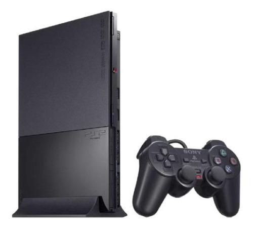
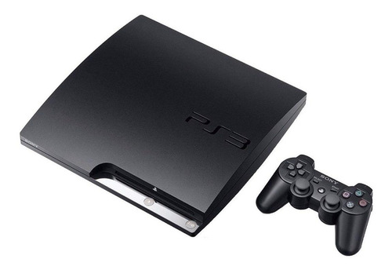
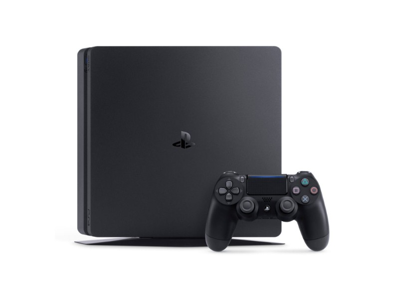

Foi lançado em 3 de dezembro de 1994, no Japão, e em 29 de setembro de 1995, nos Estados Unidos. Desde o seu lançamento até 2006 (quando sua produção foi extinta), a PlayStation vendeu mais de 103 milhões de unidades. Inicialmente PlayStation seria um leitor de CD-ROM para o Super Nintendo Entertainment System, o SNES-CD, a ser produzido em conjunto com a Nintendo.[2] Durante as negociações para o lançamento, o acordo entre as empresas foi rompido. Então o engenheiro Ken Kutaragi convenceu os executivos da Sony a continuar com o projeto. Foi aí que nasceu a divisão Sony Computer Entertainment (atualmente Sony Interactive Entertainment), com o objetivo de implementar no mercado uma nova consola de videogame: a PlayStation. Mal sabia a Nintendo que nascia ali o seu maior rival no mundo do entretenimento eletrônico, que superou até mesmo a Sega.
A PlayStation 2 (PS2) é o segundo console de videogame produzido pela Sony Computer Entertainment, após a PlayStation original. Foi inicialmente lançada no dia 4 de março de 2000 no Japão, no dia 26 de outubro na América do Norte, e posteriormente, no dia 24 de Novembro na Europa. A PlayStation 2 possui hoje o título da consola de videogame mais vendida na história: foram mais de 150 milhões de unidades comercializadas no mundo.
A PlayStation 3 (PS3) é a terceira console de videogame de mesa produzido pela Sony Computer Entertainment e o sucessor da PlayStation 2. Foi lançado em 12 de novembro de 2006 no Japão, 17 de novembro na América do Norte e em 29 de março de 2007 na maior parte da Europa e na Oceania. No Brasil foi lançada oficialmente em 11 de agosto de 2010.
O PlayStation 4 (PS4) é um console produzido pela Sony. Veio após a PlayStation 3 como console de mesa e após a PlayStation Vita na linha geral de consoles da Sony. O dia do lançamento da consola foi 15 de novembro de 2013 nos Estados Unidos e em 29 de novembro de 2013 na América Latina (incluindo Brasil) e na Europa, de acordo com os dados divulgados pela própria Sony.[5] O preço da consola é de US$399.00 ou algo em torno de R$1000,00 nos Estados Unidos da América, enquanto no Brasil o preço atingiu R$3.999,00 no lançamento.[6] Atualmente o console é montado no Brasil tendo o seu preço reduzido para R$2600,00 em um primeiro momento.

O PlayStation 5 (PS5) é o novo console que chega sete anos após o lançamento do seu antecessor PlayStation 4 (PS4). O videogame chega ao Brasil no dia 19 de novembro pelo preço de R$ 4.499, na versão digital, e R$ 4.999, na edição com leitor Blu-Ray Ultra HD. O destaque é a CPU AMD Zen 2, de 3,5 GHz, e o SSD personalizado de 825 GB superrápido que, de acordo com a fabricante, pode torná-lo o videogame "mais rápido do mundo"